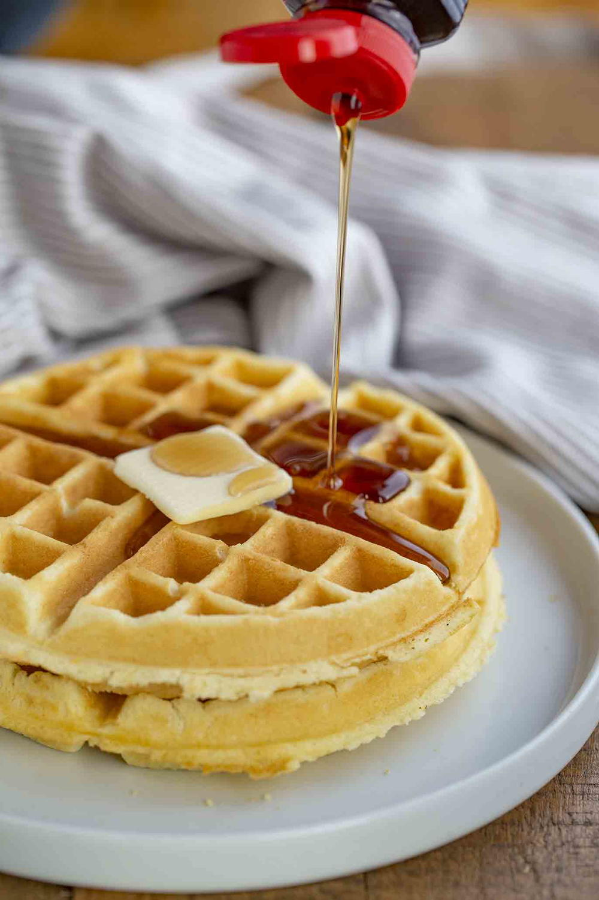

Waffles

A lovely, crispy waffle perfect for the morning.
Ingredients
- 2 cups all-purpose flour
- 1 teaspoon salt
- 4 teaspoons baking powder
- 2 tablespoons white sugar
- 2 eggs
- 1.5 cups warm milk
- 1/3 cup butter, melted
- 1 teaspoon vanilla extract
- Step 1:In a large bowl, mix together flour, salt, baking powder and sugar; set aside. Preheat waffle iron to desired temperature.
- Step 2:In a separate bowl, beat the eggs. Stir in the milk, butter and vanilla. Pour the milk mixture into the flour mixture; beat until blended.
- Step 3:Ladle the batter into a preheated waffle iron. Cook the waffles until golden and crisp. Serve immediately.